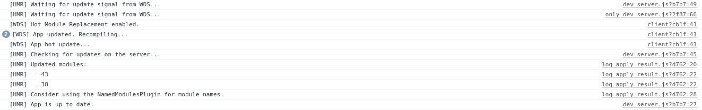
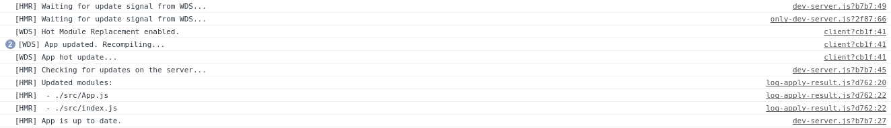

Configurando Hot Module Replacement
Hot Module Replacement, HMR, permite intercambiar, añadir o eliminar módulos sin necesidad de hacer una recarga completa de la aplicación.
Comenzaremos configurando HMR modificando el webpack.config.js para incluir estos cambios.
Incluiremos el plugin de HMR:
plugins: [
new webpack.HotModuleReplacementPlugin() // Enable HMR
],
los plugins permiten modificar el comportamiento de webpack añadiendole nuevas funcionalidades.
Ahora le diremos al webpack-dev-server que utilice HMR:
devServer: {
contentBase: path.join(__dirname, "dist"),
hot: true, // Tell the dev-server we're using HMR
compress: true,
port: 3000,
publicPath: '/js/'
},
Añadiremos la propiedad publicPath también al output:
output: {
path: path.resolve(__dirname, 'dist/js'),
filename: '[name].js',
publicPath: "/js/"
},
Como se explica en la documentación hemos de indicar
en nuestros módulos que hagan uso de HMR. Esto lo podemos hacer a nivel de módulo o directamente en el módulo
raiz que hará que HMR lo use todo el arbol de módulos. Para ello añadiremos a nuestro archivo index.js el código necesario para
hacer uso de HMR:
if (module.hot) {
module.hot.accept();
}
Si ahora realizamos un cambio en App.js veremos que se aplican estos sin recargar toda la página. Podremos ver la salida
en la consola de desarrollo:

Como podemos observar, los nombres de los archivos que han cambiado no aparecen. Para evitar esto, añadiremos un plugin a la
configuración actual de webpack
plugins: [
new webpack.HotModuleReplacementPlugin(), // Enable HMR
new webpack.NamedModulesPlugin(),
],
